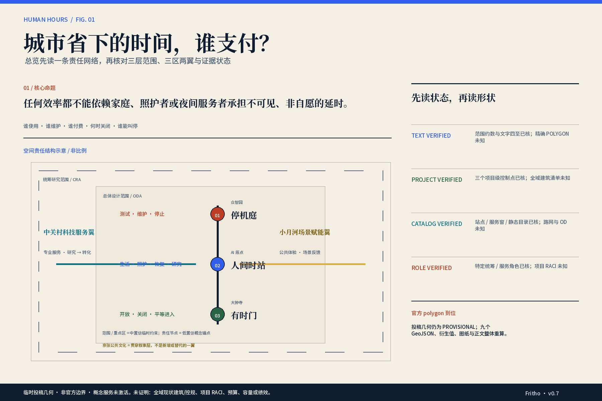
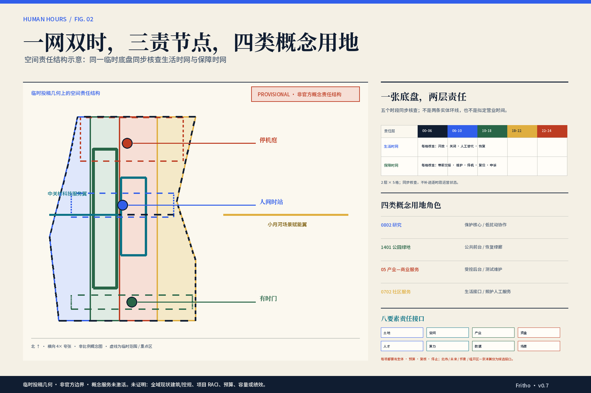
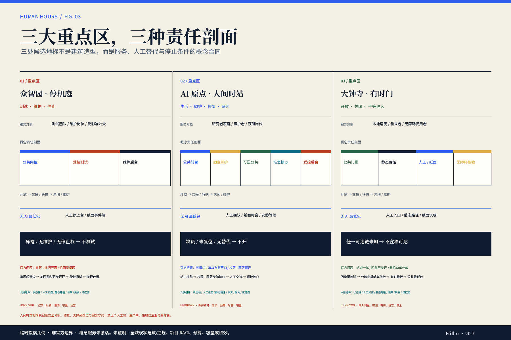
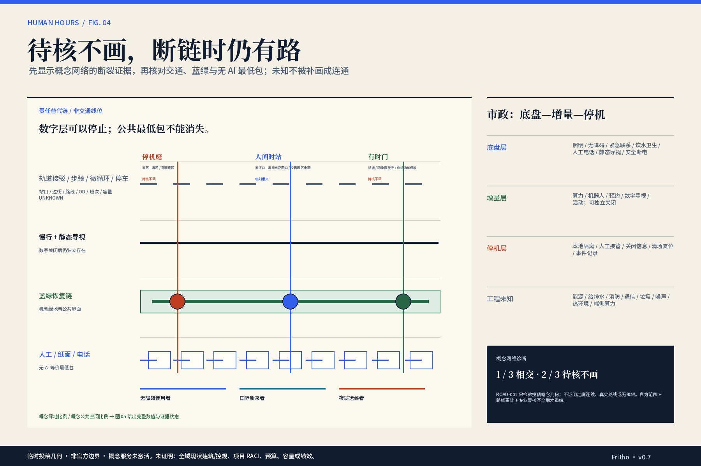
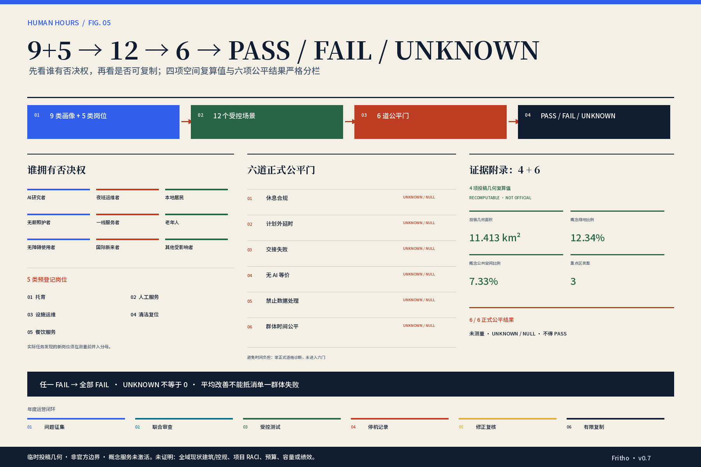

01 / 核心命题
城市省下的时间，最终由谁支付？
任何效率都不能建立在家庭成员、照护者和夜间服务人员不可见、不可选择的超时上。
每一项空间与 AI 服务，都必须同时写明谁使用、谁维护、谁支付、何时关闭，以及失败时谁有权停止。
02 / 官方 3×5 合同
三大定位不是背景， 五大功能不是口号。
每项功能只有一个主责空间载体；其他层只能协同，不能重复认领。官方词汇保持原样，方案补充责任、停止与证据边界。
AI 全栈自主创新体系世界级 AI 创新生态AI+ 场景赋能新范式智能化 AI 活力城市AI 治理全球话语权
百年京张文化带
AI 治理全球话语权
停机庭 + 公开审计 + 人间时贡献簿都市 AI 生活体验带
AI+ 场景赋能新范式 · 智能化 AI 活力城市
大钟寺 + 小月河场景赋能翼 + 三区公共空间AI 融合创新带
AI 全栈自主创新体系 · 世界级 AI 创新生态
众智园 / AI 原点 + 中关村科技服务翼三区承担主责 · 两翼提供接口 · 京张文化贯穿叙事。任何主体、资源、预算、容量或合作仍待核验。
03 / 三个设计动作
不是增加更多 AI， 而是重新分配责任。
三个动作构成因果链：先找到责任主体，再把时间写进空间，最后让服务在失效时仍然成立。
01
把形状改写成责任
三区两翼分别回答服务、维护、支付、停止与整体重算；它们不是五个等待招商的园区。
得到：可追责的责任网络02
让两层责任按时段共同核查
五个时段同时核查生活时网与保障时网；空间可以转换，照护与恢复核心不能被挤占，也不交换个人身份。
得到：可被逐时段审查的人间时站03
先设计失败，再谈智能
AI 关闭时，人工、纸面、电话、静态导视与无障碍替代仍能完成基本任务。
得到：断链时仍可达的服务
04 / 六案 × 八要素案例不复制， 机制才进入空间。六个全球案例只提供机制参照；八类要素逐一显示主体、预算、复核、停止与退出，再通过候选接口形成区域协同。完整审计 · 展开 6 案 · 8 要素 · 5 区域接口
六个案例转译
八类责任要素
五个区域候选接口
- 中关村 AI 北纬社区人才—高校—孵化服务
- 未来科学城成果—问题—专业转译
- 怀柔科学城大设施受控访问与转化
- 北京经开区机器人制造验证
- 京津冀场景需求与有限复制
仅交换问题单、去标识证据、复核结果与复制条件；不证明合作、资源、线路、费用、容量或授权。
05 / 双主角的一天
同一座城市， 两种完全不同的时间账单。
五个共同时间段不等于要求所有人始终在线。每一格都问：谁获得便利，谁承担交接，谁能够恢复。
TIME / PERSON
00–06 深夜
06–10 清晨
10–18 白天
18–22 傍晚
22–24 夜间
AI 研究人员
共同育儿
休息
拒绝随时在线
照护交接
人工确认
研究协作
保留安静席位
接回 / 简餐
不挤压清场
恢复或关闭
不变全天办公室
夜间运维者
白天照护
计划维护
现场可停机
带薪交班
离线返程
恢复优先
照护不转嫁
照护交接
不无薪早到
关闭复位
全部计入工时
AI 研究人员
共同育儿休息
拒绝随时在线
夜间运维者
白天照护计划维护
现场可停机
AI 研究人员
共同育儿照护交接
人工确认
夜间运维者
白天照护带薪交班
离线返程
AI 研究人员
共同育儿研究协作
保留安静席位
夜间运维者
白天照护恢复优先
照护不转嫁
AI 研究人员
共同育儿接回 / 简餐
不挤压清场
夜间运维者
白天照护照护交接
不无薪早到
AI 研究人员
共同育儿恢复或关闭
不变全天办公室
夜间运维者
白天照护关闭复位
全部计入工时
若一人的少等待，来自另一人的无薪延时——方案失败。人物均为合成压力测试画像，不冒充真实居民或访谈对象。
四问责任审计
不是替主角编路线，而是在每个场景的打开、使用、失效与重开时刻，要求责任落到可见空间证据。
谁承诺开门？
服务状态、人工窗口、关闭原因与当班责任
谁支付等待与绕行？
等候/绕行记录、岗位时间、等价无 AI 路径
谁接回责任并有权停止？
静态替代、人工接管、物理停止与申诉入口
谁签认带薪复位与重开？
带薪清场/维护、失败记录、复核与重开证据
06 / 十二场景 × 六组件
每张场景卡， 都是一份停止合同。
场景不只显示名称：还要看使用者与岗位、无 AI 最低包、预算承担、最小与禁止数据、人工接管和停止条件。
一次性交接凭证
- 无 AI 最低包
- 现场人工登记、纸面凭证和电话转介完成同一交接
- 预算承担
- 具备资质的照护运营角色与公共服务运营角色共同预留交接、替班和转介预算
- 最小 / 禁止数据
- 单次本地预约 · 不可重识别聚合容量 / 雇主身份、跨点轨迹、家庭成员关系图、照护状态就业用途
- 人工接管
- 现场服务人员决定接收、暂停或转介；AI 不可覆盖安全与资质判断
- 停止条件
- 服务失败由家庭无薪等待补足；无 App 通道更慢或更贵；照护记录被雇主读取
- 指标
- 交接 · 无 AI · 数据
有时服务看板
- 无 AI 最低包
- 静态时刻表、纸面改道图与现场人工公告
- 预算承担
- 节点公共服务运营方承担状态维护、纸面更新和人工说明工时
- 最小 / 禁止数据
- 不可重识别聚合容量 / 个人到访轨迹、工牌身份、消费画像、员工在线评分
- 人工接管
- 现场人员可覆盖错误状态并立即标注人工更新时间
- 停止条件
- 把看板在线等同于人工全天服务；无纸面替代；隐藏关闭原因
- 指标
- 交接 · 无 AI · 公平
机器人安全停机台
- 无 AI 最低包
- 物理急停、人工检查、双人交班和隔离区独立成立
- 预算承担
- 测试发起方、设备所有者或其保险安排承担停机、维护、替班与恢复预算
- 最小 / 禁止数据
- 隔离安全日志 / 个人响应速度排名、自动取消急停、公众生物识别、未经授权的真实城市部署
- 人工接管
- 运维人员和安全负责人均有不可被模型覆盖的停止权
- 停止条件
- 模型覆盖物理急停；失败测试被隐藏；通过追加个人值守维持运行
- 指标
- 休息 · 延时 · 数据
完整场景审计展开其余 9 张场景合同场景不只显示名称：还要看使用者与岗位、无 AI 最低包、预算承担、最小与禁止数据、人工接管和停止条件。完整字段 · 可逐卡核验
夜班后保护恢复
- 无 AI 最低包
- 门禁外的人工规则、静态时窗和劳动者自报保护即可成立
- 预算承担
- 雇主或测试委托方承担替班与恢复窗口，设施运营方承担空间维护
- 最小 / 禁止数据
- 不可重识别聚合容量 / 睡眠数据、家庭照护状态、个人疲劳评分、绩效与排班惩罚用途
- 人工接管
- 劳动者本人和劳动者代表可冻结预约、要求替班或关闭空间
- 停止条件
- 保护空间成为待命区；用个人疲劳评分安排工作；夜班后直接默认承担照护
- 指标
- 休息 · 延时 · 数据
无统一账户的多语服务
- 无 AI 最低包
- 多语纸面信息、电话翻译和人工窗口提供同等服务
- 预算承担
- 独立公共服务运营角色承担翻译、校核与有限窗口内的人工服务预算
- 最小 / 禁止数据
- 无必需个人数据 / 护照影像留存、跨服务统一身份、国籍画像、语言能力就业用途
- 人工接管
- 现场人员复核高风险回答，用户可直接跳过 AI
- 停止条件
- 强制注册统一账户；AI 错误无人工更正；国际化依赖额外夜班
- 指标
- 无 AI · 公平 · 数据
带薪模式切换试验
- 无 AI 最低包
- 双人纸面清单、物理隔离和人工签认完成同一转换
- 预算承担
- 活动方或测试发起方承担完整转换、替班、存储和取消预算
- 最小 / 禁止数据
- 隔离安全日志 / 个人复位速度排名、清洁人员绩效评分、公众身份链、自动强制开场
- 人工接管
- 清洁、服务和运维三方任一可拒绝转换并关闭空间
- 停止条件
- 转换时间不计薪；模型覆盖人工停止；公众与后台混流
- 指标
- 延时 · 休息 · 数据
不追踪个人的夜间返程信息
- 无 AI 最低包
- 静态地图、服务热线和现场紧急联络
- 预算承担
- 交通信息提供方与节点公共运营方承担核验和更新预算
- 最小 / 禁止数据
- 不可重识别聚合容量 / 连续定位、人脸识别、个人风险评分、雇主可见返程记录
- 人工接管
- 紧急情况转既有合法人工响应；AI 不替代报警与安全判断
- 停止条件
- 保存个人路线；把安全等同于监控；错误实时信息无来源
- 指标
- 无 AI · 数据 · 时间负担*
无障碍断链压力测试
- 无 AI 最低包
- 人工巡检、实体旅程测试和公开替代路线
- 预算承担
- 场地或活动运营方承担无障碍复核、替代路径和人工协助预算
- 最小 / 禁止数据
- 隔离安全日志 / 障碍类型个人档案、人脸或步态识别、个人路线留存、未经复核的自动放行
- 人工接管
- 无障碍使用者代表可否决开放或活动布置
- 停止条件
- 只以模型准确率验收；未保留人工协助；路径失败仍标为开放
- 指标
- 公平 · 无 AI · 交接
无工牌公共时段
- 无 AI 最低包
- 人工计数、固定公共配额和现场可见规则
- 预算承担
- 产业活动方和场地运营方优先承担公共最低包、复位与额外服务成本
- 最小 / 禁止数据
- 不可重识别聚合容量 / 工牌身份、消费画像、会员等级、个人停留轨迹
- 人工接管
- 社区代表和现场人员可停止超范围包场并恢复公共最低包
- 停止条件
- 工牌优先；长期包场；无 App 等待更久
- 指标
- 公平 · 无 AI · 延时
设备日志与就业系统隔离
- 无 AI 最低包
- 人工读取设备日志、双人复核和本地维修清单
- 预算承担
- 设备所有者与测试发起方承担数据隔离、审计和人工复核预算
- 最小 / 禁止数据
- 隔离安全日志 / 就业绩效、薪酬、排班惩罚、照护状态、跨点个人 ID
- 人工接管
- 运维者可拒绝模型建议，安全负责人必须解释最终决定
- 停止条件
- 进入人事系统；形成个人排行榜；无法删除或审计访问
- 指标
- 数据 · 延时
时间转嫁模拟器
- 无 AI 最低包
- 桌面演练、静态改道图和人工关闭清单
- 预算承担
- 三区运营方与测试发起方共同承担模拟、人工复核和修正方案的预算
- 最小 / 禁止数据
- 不可重识别聚合容量 / 员工 ID 与实名名册、考勤、工资与个人班次历史、个人故障响应与维修日志、跨点个人路线、员工实时位置、自动跨点调班、无障碍身份档案
- 人工接管
- 各节点运营角色可独立停止，劳动者、社区、照护者和无障碍代表可否决转嫁负担的改道
- 停止条件
- 跨点个人追踪；无薪抽调人员；平均改善掩盖单群体负担
- 指标
- 交接 · 时间负担* · 公平 · 数据
城市作息公开审计
- 无 AI 最低包
- 公开台账、社区会议、劳动者评议和纸面城市作息图
- 预算承担
- 三区节点运营方与城市公共治理角色共同承担审计、参与和更正预算
- 最小 / 禁止数据
- 不可重识别聚合容量 / 个人时间账本、个人生产率、员工排名、照护身份、可重识别时空链
- 人工接管
- 社区、劳动、照护和无障碍代表共同解释指标并可否决误导性排名
- 停止条件
- 个人或节点生产率排名；未知数据被模型补全；平均值掩盖群体失败
- 指标
- 休息 · 延时 · 交接 · 时间负担* · 无 AI · 数据 · 公平
07 / 三区项目包与实施链
不画假建筑， 也能把专业责任画清楚。
三处重点区先形成条件式空间序列；市政采用底盘—增量—停机拓扑；实施压缩为三个可停止工作包。
AI 原点 · 人间时站
官方问题：五道口—清华东路西口、校区—园区慢行
站口核验 → 步骑接口 → 人工交接 → 保护核心 → 安静恢复
核验站口、过街、校门/园门、坡道、电梯、停放与产权边界任一链未知只保留核验入口；照护资质、岗位、替班或退出不可核 → 增量关闭大钟寺 · 有时门
官方问题：站城一体、路口四象限步行、非机动车停放
四象限核验 → 分散停放 → 到达门廊 → 有时看板 → 公共最低包
核验站口、信号、坡道、电梯、四象限连续性、停放与人工链任一链未知 → 撤销可达宣称；不画工程线位或声称已接驳众智园 · 停机庭
官方问题：五环—清河界面、花园型街区
清河观察边 → 花园型科研步行环 → 受控测试 → 物理停机 → 维护复位
核验跨越条件、滨水/绿地权属、防洪安全、测试边界与维护入口安全、工时、数据、停止权或跨越条件任一失败 → 停机 / 不连通四类地面事实：已核验，不等于已补全
每条先显示公开事实，再显示它仍不能证明什么；局部项目记录只缩小未知范围，不自动生成全域图层或服务承诺。
事实审计展开四类地面事实证据账每条先显示公开事实，再显示它仍不能证明什么；局部项目记录只缩小未知范围，不自动生成全域图层或服务承诺。文字 · 项目点 · 目录 · 特定角色
- 已核事实
- 官方公告公开了约 43.6 平方公里统筹研究范围、约 11.4 平方公里总体设计范围、约 368.4 公顷三重点区总量及文字四至。
- 仍未知
- 公开公告页未提供可下载的精确 polygon 或清权 CAD/GIS/PDF；仓库三处重点区仍是临时粗略多边形。
- 设计后果
- 保留现有临时几何作为构图与拓扑测试底盘；不移动边界、不输出法定面积，官方 polygon 到位后整体重算。
- 已核事实
- 已核验三个真实项目级锚点：众智园学北园五栋、约 23.83 万平方米并已完成竣工备案；AI 原点周边约 1.7 万平方米环境整治及原点大厦融 HUB 改造采购；大钟寺蓝景丽家地块总用地 39,522.111 平方米、地上建筑规模 96,811.508 平方米，其中主地块限高 60 米、容积率 2.45、绿地率不低于 25%。
- 仍未知
- 这些记录不构成三区全域现状建筑轮廓、权属、结构、拆改留、入住、当前开放或服务容量；融 HUB 仍是采购记录，学北园公开运营状态未核。
- 设计后果
- 继续保持 buildings.geojson 空集；把三条记录作为项目控制点与现场核验入口，不外推为片区建筑方案或既有能力。
- 已核事实
- 大钟寺、清河站点页，夜 4 路 23:20 至次日 04:50 服务窗，以及北京公交与轨道站点静态目录提供了站名、线路、站序或站点编码等核验入口。
- 仍未知
- 公开目录缺少项目所需的精确出入口、连续步骑路网、逐站时刻与可靠性、夜间安全、客流、OD 和可复算旅程分钟。
- 设计后果
- 只把站点与服务窗列为现场核验入口；ROAD-001 的 1/3 相交、2/3 待核不画结论不变，不补画路线或分钟。
- 已核事实
- 公开记录可识别大钟寺与众智园更新统筹入口、AI 原点建设采购角色，以及 AI 原点社区专精特新服务站的运营单位北京市东升农工商总公司。
- 仍未知
- 上述角色不等于本方案照护、人工服务、劳动审计、数据治理、无障碍评议、停机复位或全天运营的授权主体；预算、岗位、容量、服务窗、申诉与退出仍未知。
- 设计后果
- 生态图可标记“已核验的特定角色”，但项目 RACI 继续为 candidate/TBD；任何公共服务增量在主体—预算—岗位—停止链齐全前保持未激活。
六条接口证据账：没有证据，就保留缺口
每条接口同时显示空间问题、待核专业、不画条件与重绘触发。角色接口不冒充机构落位，概念线不冒充真实可达。
ROAD-001：1 / 3 临时重点区相交 · 2 / 3 待核不画。只诊断投稿概念几何，不证明真实路线或无障碍。
网络审计展开六条接口证据账每条接口同时显示空间问题、待核专业、不画条件与重绘触发。角色接口不冒充机构落位，概念线不冒充真实可达。空间问题 · 不画条件 · 重绘触发
AI 原点站口—社区边界
站口、过街与社区前台能否形成连续且可关闭的到达链？
- 待核
- 站口位置、过街、坡道、电梯、地面、产权与服务窗口的联合现场核验
- 专业责任
- 交通 / 无障碍 / 权属 / 运营
- 不画条件
- 任一必需链未知，不画接驳或无障碍实线
- 重绘触发
- 取得官方范围与清权后的连续路线记录
AI 原点校园—园区步骑界面
校门、园门、停放与保护核心之间能否避免把等待转嫁给照护者和工作人员？
- 待核
- 校门/园门开放规则、慢行连续性、停放冲突、照明与人工替代
- 专业责任
- 城市设计 / 交通 / 运营 / 照护
- 不画条件
- 开放规则或人工替代未知，不画连续通行线
- 重绘触发
- 规则、路线与责任主体在同一记录中完成复核
大钟寺站城四象限界面
四象限步行、非机动车停放和公共最低包是否连续且等价？
- 待核
- 站口、信号、四象限连续性、坡道、电梯、停放、消防与人工链
- 专业责任
- 交通 / 无障碍 / 消防 / 公共服务
- 不画条件
- 当前 ROAD-001 不相交；无完整现场链就不画连接
- 重绘触发
- 官方范围与逐象限路线审计完成
众智园五环—清河界面
跨越、滨水安全、花园科研步行与维护入口能否同时成立？
- 待核
- 跨越条件、权属、防洪、生态、维护入口、测试边界与夜间关闭
- 专业责任
- 交通 / 水务 / 景观 / 安全 / 运维
- 不画条件
- 当前 ROAD-001 不相交；跨越与防洪任一未知就不画连接
- 重绘触发
- 官方范围、专业底图与联合安全审查完成
中关村科技服务翼角色接口
专业服务如何进入三区而不被误写成已签约空间或资源？
- 待核
- 发起、运营、费用、服务窗、容量、数据责任、申诉与退出
- 专业责任
- 产业 / 政策 / 运营 / 数据治理
- 不画条件
- 主体或服务条件未知，只画角色接口，不画合作线路或机构落位
- 重绘触发
- 形成可公开核验的主体—资源—责任记录
小月河场景赋能翼公共接口
低风险体验与场景反馈如何保留无 AI 最低包和停止权？
- 待核
- 场地、运营、预算、代表性评议、人工替代、数据边界与关闭路径
- 专业责任
- 公共空间 / 社区 / 运营 / 数据治理
- 不画条件
- 真实 RACI 与公共最低包未知，不画连续服务或容量
- 重绘触发
- 场景合同与公共利益复核均完成
专业审计展开专业核验层三处重点区先形成条件式空间序列；市政采用底盘—增量—停机拓扑；实施压缩为三个可停止工作包。交通 · 市政 · 工作包 · 年度运营
四层交通概念组织（只作核验框架）
市政：底盘—增量—停机
三个可停止工作包
证据底盘
官方几何、建筑 / 权属 / 控规、交通市政底数与六门预登记
三区原型
十二场景、五项产业验证与六族公共空间组件
年度运营与区域接口
问题征集、联合审查、受控测试、停机记录、修正复核、有限复制
候选年度活动—社区—传播—转化矩阵
人间时开放周年度
公开审计、未解决争议与三地标轮换体验
场景开放诊所季度
问题单、无 AI 基线演练与受控测试报名
开发者责任共评月度 / 季度候选
开源组件评审、失败复盘与数据边界检查
三地标维护日季度候选
状态柱、静态路径、恢复与停机证据面复核
双语证据发布每轮审计后
国际传播只发布可追溯证据、未知与复制条件
招引转化关卡按项目
问题单 → 受控测试 → 六门 → 有限复制 / 停止
以上均为候选活动品牌与频率；运营主体、场地、预算、参与规模和日期为 TBD。缺真实 RACI、预算、替班、保险、数据控制或代表性评议即不启动。
验收审计展开方法—图件—验收链六个规划方法各有唯一主图与可被推翻的人读字段；官方范围、场景合同、指标或 schema 变化时，沿下游引用重绘。6 种方法 · 6 个可推翻判断
三层范围与官方 3×5 合同
FIG-01 · A3-P02 · A3-P03 · A0-BOARD-1
三层工作深度、三区两翼、三定位与五功能均可在 10 秒内定位；不形成第三翼或法定红线暗示双时网与四类概念用地
FIG-02 · A3-P05 · A0-BOARD-1
生活时网、保障时网、四类用地与 0802/1401/05/0702 对位可读；只作概念角色叠加三重点区条件式项目包
FIG-03 · A3-P06 · A0-BOARD-1
每区均显示官方问题、核验序列、无 AI 最低包与停止条件；地标不被读成建筑落位接口证据与概念网络诊断
FIG-04 · A3-P07 · A0-BOARD-2
明确显示 ROAD-001 仅与 1/3 临时重点区相交、2/3 待核不画；不得形成三地连通或可达宣称双主角四问责任审计与十二场景
A3-P04 · A3-P08 · VISUAL-SCENARIOS
打开、使用、失效、重开四问均落到空间证据；12 卡各含人、时、地、无 AI、数据、接管、预算、停止与指标4+6 证据账本与实施闭环
FIG-05 · A3-P09 · A3-P10 · A0-BOARD-2
四项可复算空间值与六项未测量公平结果分栏；UNKNOWN≠0，任一 FAIL→全部 FAIL；三工作包均可停止缺真实主体、预算、替班、日志、人工替代、数据隔离或代表性复核 → 不激活 / 不复制。能源、给排水、消防、通信、垃圾、噪声、热环境与端侧算力容量仍为 UNKNOWN。
08 / 六道可验证闸门
平均更好，不足以通过。
每个场景都按画像 / 岗位 × 节点 × 时段逐格输出 PASS、FAIL 或 UNKNOWN。任一必需格失败，整体停止；覆盖不足保持未知，绝不写成零。
当前 6 / 6 尚未测量 · 均不得 PASS
01
休息合规
每类岗位均满足预登记休息底线
02
计划外延时
不得出现非自愿或无薪时间转嫁
03
交接失败
换班、清场、移动与复位均被记录
04
无 AI 等价
人工 / 纸面 / 电话路径同价、同结果、同可见
05
禁止数据处理
不连接睡眠、家庭、健康、轨迹与就业系统
06
群体时间公平
九类画像与五类岗位分别拥有否决权
019 类画像 + 5 类岗位
0212 个受控场景
036 道公平门
04PASS / FAIL / UNKNOWN
ANY FAIL → WHOLE FAILUNKNOWN ≠ 0
09 / 证据附录
先读判断；需要时，再核对每一条证据。
四项空间值只描述仓库中的临时投稿几何；六项公平指标尚未测量，因此全部保持 unknown/null。
当前可复算的四项空间值
当前不可宣称的六项结果
- 休息合规未测量 · 不得 PASS
- 计划外延时未测量 · 不得 PASS
- 交接失败未测量 · 不得 PASS
- 无 AI 等价未测量 · 不得 PASS
- 禁止数据处理未测量 · 不得 PASS
- 群体时间公平未测量 · 不得 PASS
展开正式评审链与主张边界
全部展示判断回到结构化对象；页面不加载远程字体、地图瓦片、脚本、API 或追踪代码。
| 人物与场景 | 9 类画像 + 5 类岗位 · 12 个场景 | 420 个群体—节点—时段单元 |
|---|---|---|
| 公平门禁 | 6 项正式指标 · 全部 unknown/null | 2040 个基础指标单元 |
| 正式响应 | 23 项任务 · 5 项标准 · 15 项深度 | 逐行关联正文、图件、数据、指标与自检 |
| 来源与假设 | 50 条投稿来源记录 | 精确 polygon、全域建筑、OD、项目 RACI 与实测仍待补 |
主张边界
展开五张双语核心图
{kind=link}
{kind=link}

{kind=link}

{kind=link}

{kind=link}

展开赛事交付覆盖
总览地图三层范围重点区域用地分区交通慢行蓝绿公共空间建筑更新项目AI 场景核心指标任务覆盖自检状态来源假设
城市是否先进，最终取决于每个人是否拥有休息、交接与停止的权利。